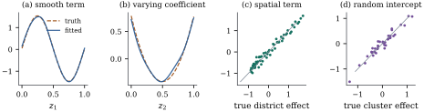

44.5 Structured additive regression
Four kinds of term have appeared: a smooth function
of a covariate, a coefficient varying with a modifier,
an effect attached to a region of a map, an effect
attached to a cluster. Each was a pair
44.5.1. One predictor
A structured additive predictor is
where
The content of the definition is the catalogue of pairs. Everything this chapter and Chapter 43 have built is in Table 44.5.1, and the list is open: a new kind of effect enters as soon as somebody writes down its design and its penalty.
Table
44.5.1. The catalogue of terms. Each row is a
design block and a penalty; the last column is the
dimension of the part of the term that the penalty never
touches, which is what survives as
| term | design block |
penalty |
|
|---|---|---|---|
| polynomial of degree |
powers of |
||
| P-spline, difference order |
B-splines at |
||
| smoothing spline | natural spline basis | ||
| varying coefficient | B-splines times |
as for the P-spline | as for the P-spline |
| Markov random field | region indicators | Eq. 44.4.2 | components of the map |
| kriging term | radial basis at knots | ||
| random intercept | cluster indicators | ||
| random slope | cluster indicators times |
||
| tensor-product surface | products of B-splines | Eq. 44.3.3 |
In Definition 44.5.1,
assume every
Proof. The criterion is the convex
quadratic
Two P-spline terms can therefore be identified even when their spaces nearly intersect, because only their linear parts — the null spaces of the second-difference penalties — need be independent. That is far weaker than the requirement for the unpenalized model in Proposition 44.2.3(a), and it explains why penalized additive fits rarely fail outright: they fail softly, through inflated variances.
44.5.2. The mixed-model representation
Let
(a)
(b) With
(c) Consequently the penalized estimate is the BLUP of Theorem 32.3.1; the smoothing parameters are variance ratios,
Proof.
- (a) The columns of
- (b) Substituting (a)
into Eq. 44.1.4 turns
it into
- (c) Immediate from
Theorem 32.3.2(a)–(b),
which identifies the minimizer of Eq. 32.3.6
with
Idea. A penalty is a prior, and a
smoothing parameter is a variance ratio. That one
identification does three jobs: the null space of a
penalty becomes fixed effects, which is why Table
44.5.1 records
44.5.3. Choosing the smoothing parameters
Two routes are now open. The first is prediction
error: Definition 29.3.2
and the information criteria Proposition 29.2.4
apply verbatim with
Maximizing the restricted likelihood directly is awkward, since each evaluation needs a determinant, and the updates below avoid it. What is proved is that they have the stated fixed points; that those are stationary points of the restricted likelihood is due to Schall (1991), with the general version in Wood and Fasiolo (2017).
In the mixed-model representation of Proposition 44.5.2,
the expectation-maximization algorithm for the variance
components, with
where
with
Proof. Eq. 44.5.3 is the
expectation-maximization step for a variance component
in a normal linear mixed model: the complete-data
estimate of
the trace term as written. (The EM step itself is quoted from the mixed-model literature; what is proved here is its fixed point.)
For the fixed point, Proposition 44.1.2(b)
gives
Read Eq. 44.5.4 as an
estimate of a variance: the numerator is the roughness
the term shows, the denominator
import numpy as np
def assemble(blocks, X, lambdas):
"""Stack the parametric columns and the terms into one design and one block penalty."""
Z = np.column_stack([X] + [Zj for Zj, _ in blocks])
K = np.zeros((Z.shape[1], Z.shape[1]))
start = X.shape[1]
for (_, Kj), lam in zip(blocks, lambdas):
d = Kj.shape[0]
K[start:start + d, start:start + d] = lam * Kj
start += d
return Z, K
class Fit:
"""One penalized solve: coefficients, components, operators and degrees of freedom."""
def __init__(self, y, blocks, X, lambdas, W=None, z=None, operators=True):
Z, K = assemble(blocks, X, lambdas)
w = np.ones(len(y)) if W is None else W
Zw = Z * w[:, None]
B = Z.T @ Zw # the weighted cross-product
A = B + K
Ainv = np.linalg.inv(A)
self.Z, self.K, self.A, self.w = Z, K, A, w
self.gamma = Ainv @ (Zw.T @ (y if z is None else z))
self.fitted = Z @ self.gamma
self.edf_total = np.trace(Ainv @ B) # tr(S) without forming S
self.parts, self.edf, self.comp = [], [], []
start = X.shape[1]
for Zj, _ in blocks:
sl = slice(start, start + Zj.shape[1])
self.parts.append(Zj @ self.gamma[sl])
self.edf.append(np.trace(Ainv[sl] @ B[:, sl]))
start += Zj.shape[1]
if operators: # the n x n smoothers
C = Ainv @ Zw.T
self.S = Z @ C
start = X.shape[1]
for Zj, _ in blocks:
self.comp.append(Zj @ C[start:start + Zj.shape[1]])
start += Zj.shape[1]
self.beta = self.gamma[:X.shape[1]]and the updates themselves are a handful more:
def null_dim(K, tol=1e-9):
"""The dimension of the penalty null space: the part of a term that is never penalized."""
e = np.linalg.eigvalsh(K)
return int(np.sum(e < tol * max(e.max(), 1.0)))
def reml_lambdas(y, blocks, X, lambdas=None, iters=80, tol=1e-8):
"""Restricted-likelihood updates for a normal response: refit, then set each variance
component to tau_j^2 = gamma_j' K_j gamma_j / (df_j - m_j) and sigma^2 to the penalized
residual sum of squares over n - df, and put lambda_j = sigma^2 / tau_j^2."""
lam = np.ones(len(blocks)) if lambdas is None else np.asarray(lambdas, float)
for _ in range(iters):
fit = Fit(y, blocks, X, lam, operators=False)
sigma2 = np.sum((y - fit.fitted) ** 2) / (len(y) - fit.edf_total)
new = lam.copy()
start = X.shape[1]
for j, (_, Kj) in enumerate(blocks):
d = Kj.shape[0]
g = fit.gamma[start:start + d]
tau2 = max(g @ Kj @ g, 1e-12) / max(fit.edf[j] - null_dim(Kj), 1e-6)
new[j] = min(max(sigma2 / tau2, 1e-8), 1e10)
start += d
done = np.max(np.abs(np.log(new) - np.log(lam))) < tol
lam = new
if done:
break
return lam, Fit(y, blocks, X, lam), sigma2A simulated data set of
The fit recovers the residual standard deviation as

The shrinkage in panels (c) and (d) is not a defect but Theorem 32.3.1: a predictor of a random effect trades bias for variance, and the slope of predicted against true falls below one by exactly the amount the estimated variance ratio dictates.
44.5.4. The Bayesian reading
Proposition 44.5.2 already contains it. Give each term the prior
normal on
Warning (Improper priors on variance
components). The prior Eq. 44.5.5 is
improper on
44.5.5. Exercises
A. Check your understanding
For each of the following, give the design block and
the penalty: (i) a random slope of a covariate
B. Practice
Take one term with
Solution. With the other effects
fixed the criterion is
Write the generalized cross-validation criterion Definition 29.3.2
for a STAR fit as
C. Going deeper
The updates Eq. 44.5.4 are a
fixed-point iteration, not a descent method, and they
are not guaranteed to converge from every start.
Construct a two-term model in which the restricted
likelihood has a stationary point at
Solution. Let the first term be a
P-spline in a covariate with no effect and the second
anything. If the data show no roughness in that term,